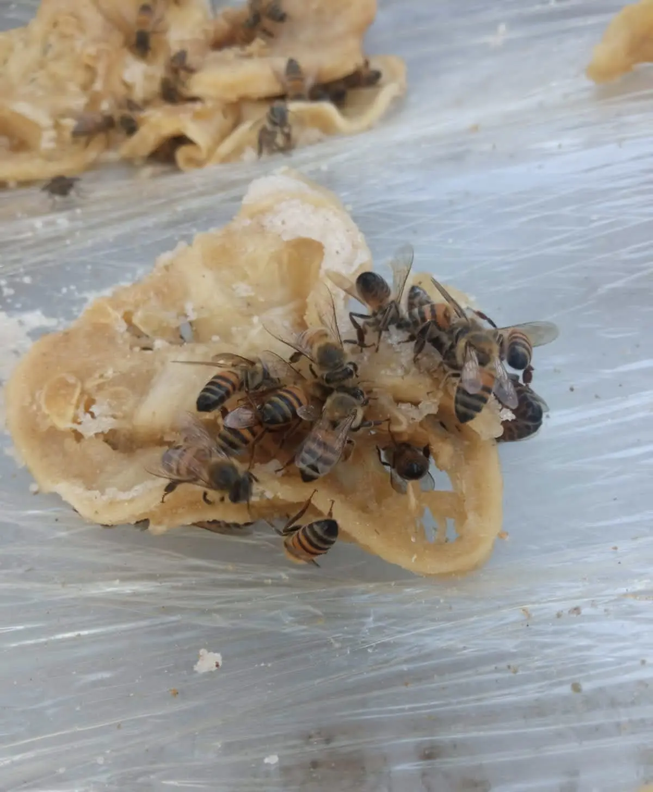
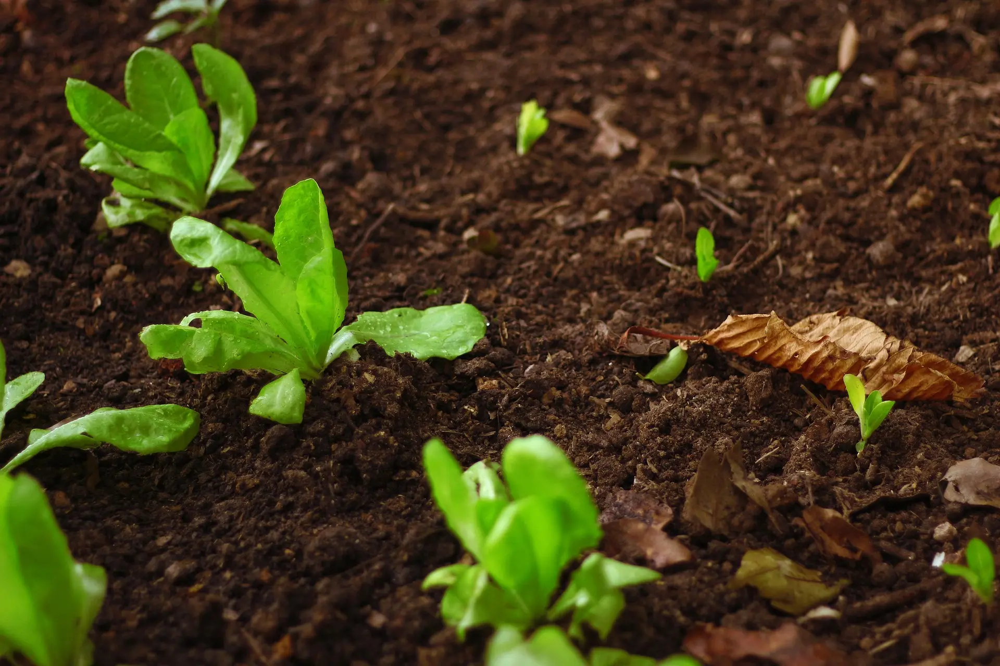
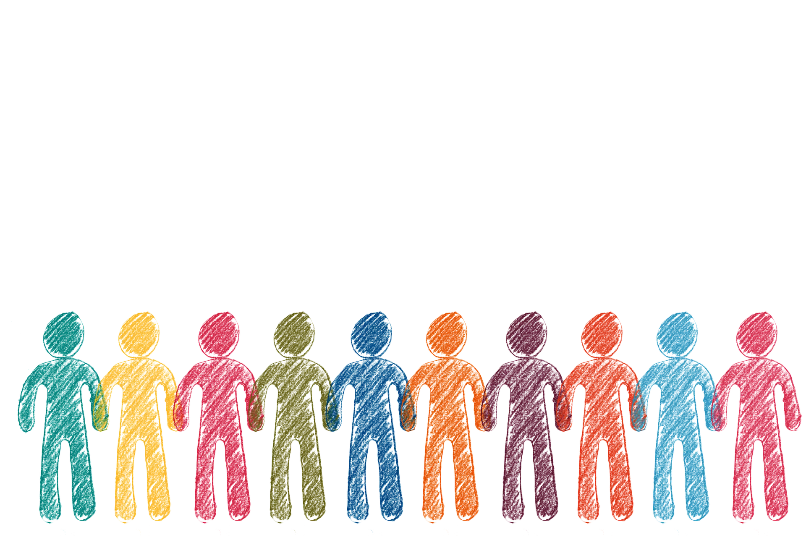
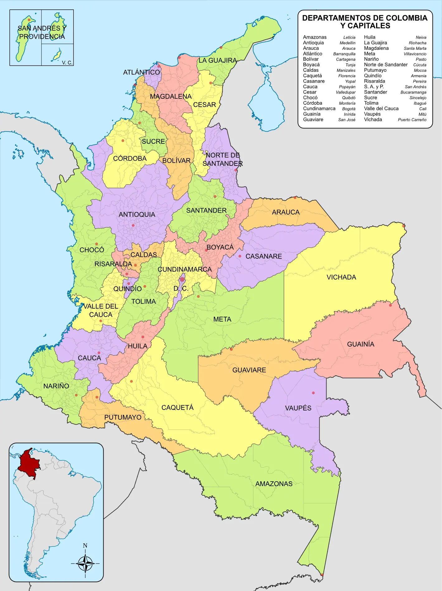

IMPORTANCIA ECOLÓGICA

1 de cada 3 alimentos depende de las abejas.
El ciclo de la polinización

Polinización

Crecimiento

Alimentación

Producción
En Colombia

En Colombia, las abejas son esenciales para nuestra biodiversidad y para la producción de alimentos. Su trabajo de polinización permite que muchos cultivos crezcan y mantiene el equilibrio de los ecosistemas.